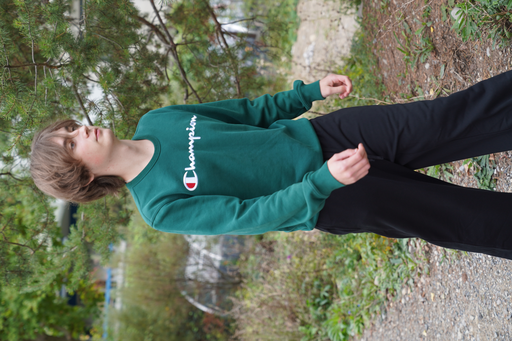

Ein wenig über mich
Ich bin in der Nähe von Odessa in der Ukraine geboren. 2025 kam ich in die Schweiz. Nachdem ich zwischen August 2025 und Juli 2026 in der Schweiz die Berufswahlschule in Winterthur besucht und Deutsch gelernt habe, will ich Informatiker werden.
Ich bin sehr geduldig und ausdauernd. So gelingt es mir, jedes ICT-Problem zu lösen und im Bekanntenkreis die Geräte am Laufen zu halten. Seitdem ich mich für eine Informatik-Ausbildung entschieden habe, beschäftige ich mich auch mit Programmiersprachen.
